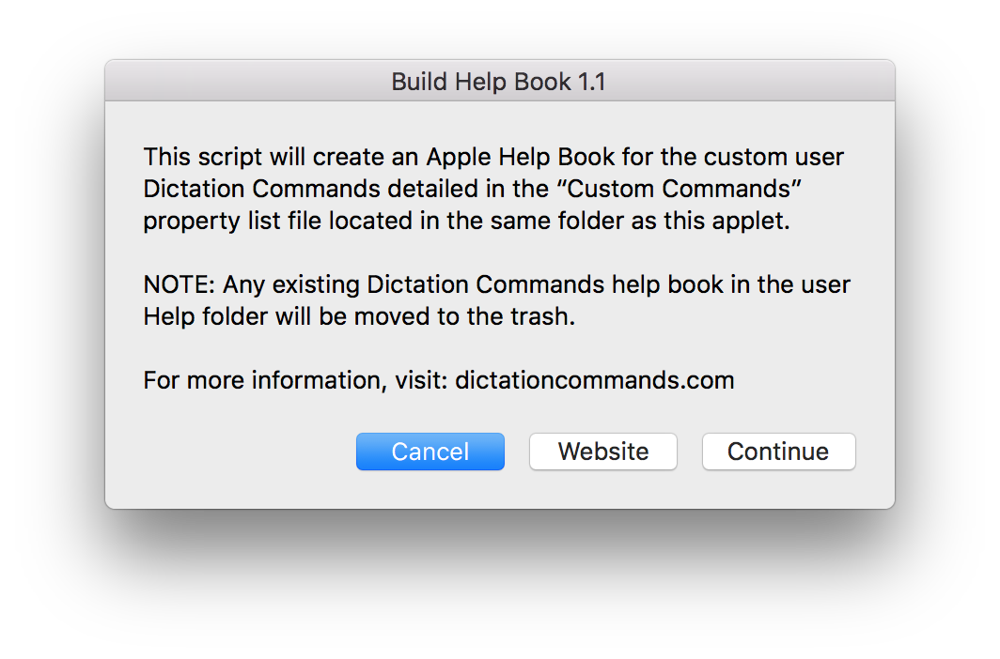
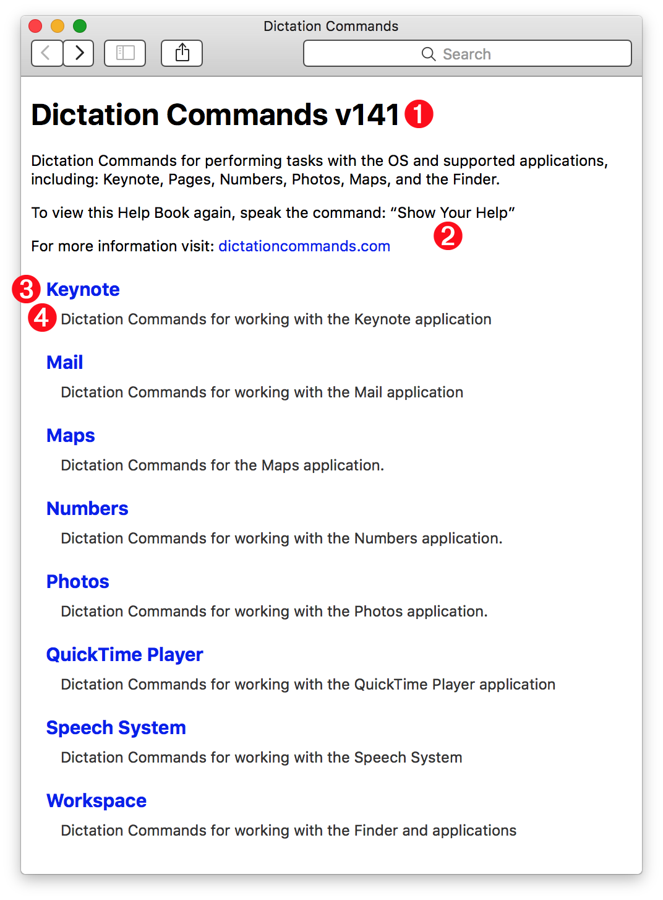
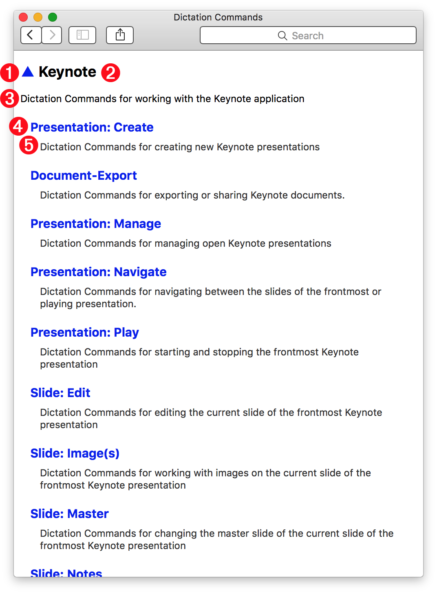
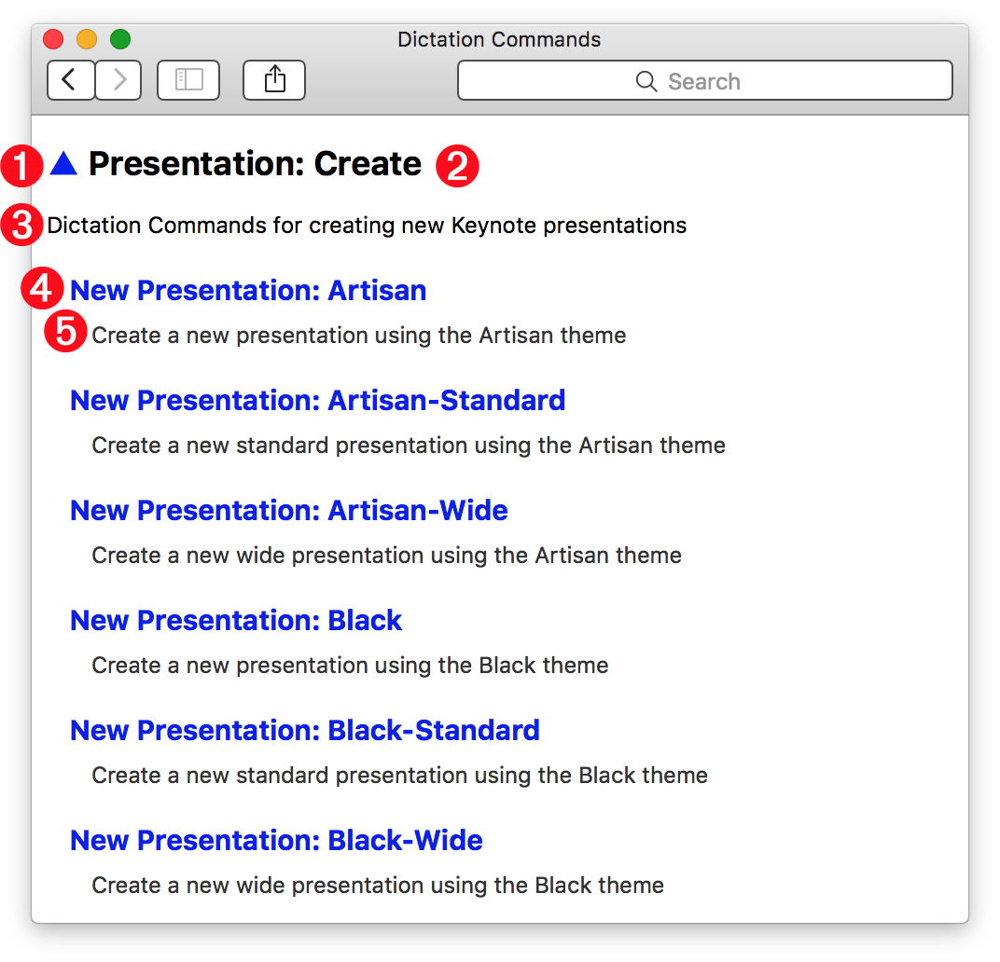
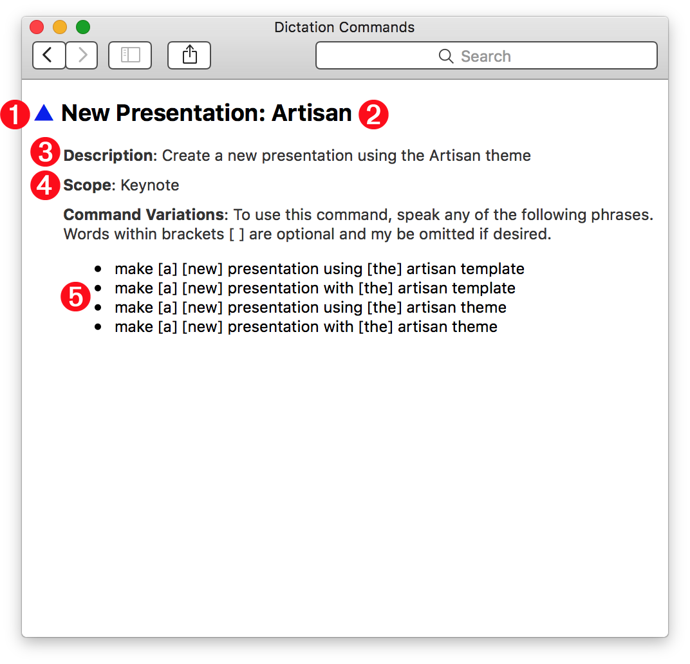

Build the Help Book
The custom dictation commands provided on this site are documented in the form of a standard Apple Help Book that is integrated with the default hel architecture of the operating system. You create this help content using the applet installer titled “3) Build Help Book”. Once created, the Dictation Commands Help Book can be summoned at any time by speaking the dictation command: “Show your help”
DO THIS ►Launch the installer applet titled “3) Build Help Book” and read the instructions in the forthcoming dialog (⬇ see below ) Click the Continue button to begin the creation process.

Once created, the help book will automatically be opened for you.
Help Book: Categories Page
The main page of the Dictation Commands help book (⬇ see below ) displays sets of commands listed by category or application 3
The page title includes the version 1 of the Custom Commands used to generate this book. Compare this version number to the number posted on the main page of this website, to make sure you have the latest set of commands installed.
The Dictation Commands help book can be summoned at any time by speaking the dictation command: “Show your help” 2
Each category 3 is either the name of an application or set of related commands, followed by a short description of the set 4

Help Book: Category Topics Page
Clicking a category link will go to the topics page for the selected category. A topics page contains links to sets of related dictation commands.
At the top left of every category topics page (⬇ see below ) is a triangle character (▲) 1 that is a link to the main help page. To its right is the category 2 whose topics are shown on the page. Beneath the category is its description 3
A category topics page contains links to topics related to the category 4 and a short description for each topic 5

Help Book: Topic Commands Page
Clicking a topic link will go to the commands page for the selected topic. A topic commands page contains links to sets of related dictation commands.
At the top left of every topic commands page (⬇ see below ) is a triangle character (▲) 1 that is a link to the main help page. To its right is the topic 2 whose commands are shown on the page. Beneath the topic is its description 3
A topic commands page contains links to commands related to the topic 4 and a short description for each command 5

Help Book: Command Page
Clicking a topic command link will go to the command page for the selected command. A command page provides detailed information about the command.
At the top left of every command page (⬇ see below ) is a triangle character (▲) 1 that is a link to the main help page. To its right is the command 2 whose information is detailed on the page.
3 Description • A description of the use of the command.
4 Scope • The scope determines when the command is available for use. If the scope value is the name of an application (like Keynote) then the command will only be available for use when that application is the frontmost app. If the scope value is “all applications” then it will be available at any time.
5 Syntax Variations • A list of the available command phrases. Words enclosed in brackets [ ] are optional.
